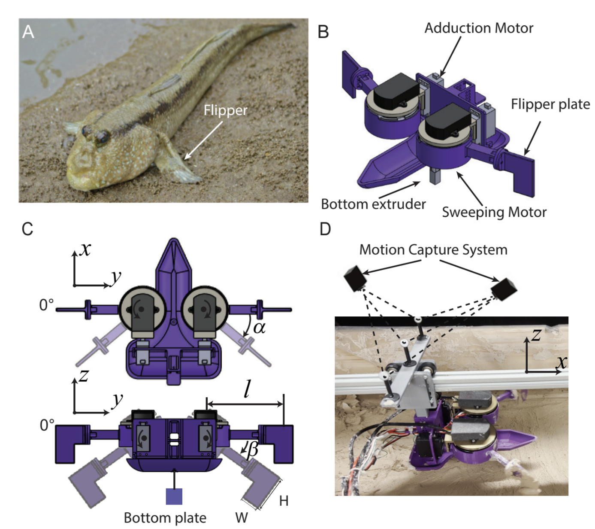
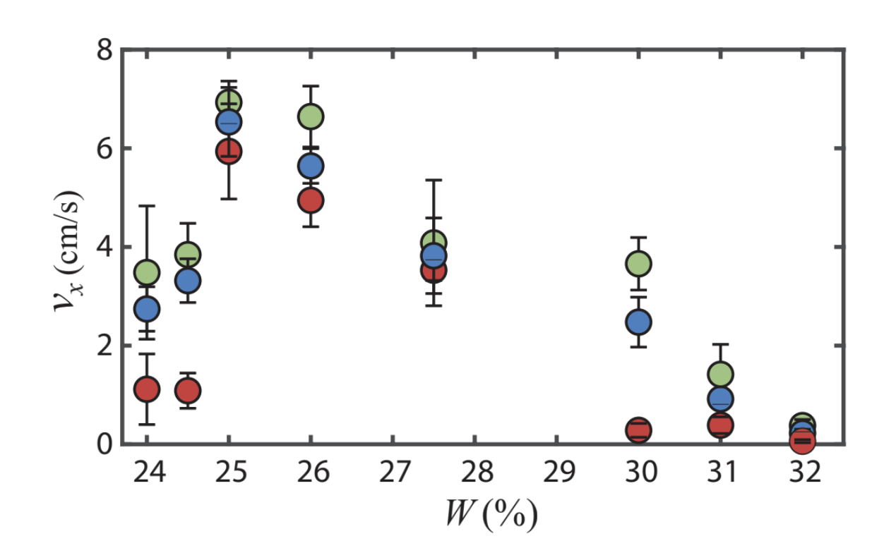
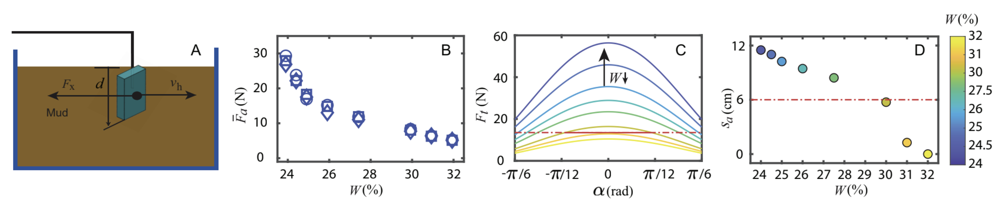
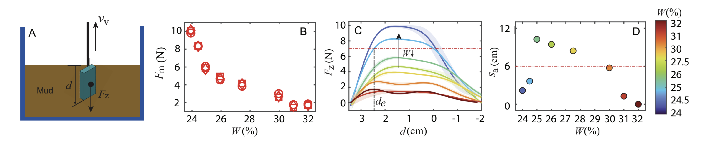
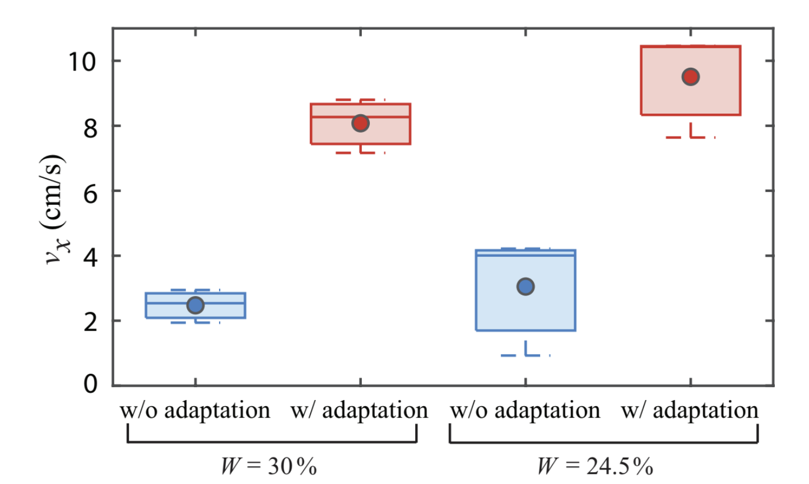

Introduction
 Motivation: Challenges of terrestrial locomotion on varying muddy substrates
Motivation: Challenges of terrestrial locomotion on varying muddy substrates
We observed a non-monotonic dependence of robot speed on mud water content, with optimal performance at intermediate levels. This reveals the complex nature of mud-robot interactions and the need for adaptive strategies.
Robot Design
We designed a mudskipper-inspired robot specifically for studying terrestrial locomotion on muddy substrates. The robot features flippers that can interact with the substrate to gather data about mud properties and locomotion performance.

Robot design showing the mudskipper-inspired mechanismExperiment
We conducted systematic experiments to understand the relationship between mud water content and robot locomotion performance, revealing a non-monotonic dependence that led to the identification of two distinct failure mechanisms.
Robot Speed Versus Mud Water Content
The robot's average speed in the forward direction exhibited a non-monotonic dependence on the mud water content. The robot achieved its highest speed at intermediate water content levels, with performance rapidly declining when the water content was either too high or too low. Even small variations in water content of just a few percent led to significant performance degradation.

Averaged robot forward speed versus mud water content. Blue, red, and green markers represent robot speed averaged from the entire trial, the last four steps, and the first four steps, respectively. Error bars represent the standard deviation of the averaged speed from three trials. Two distinct failure modes identified: flipper entrapment at low water content (causing backward displacement) and large slippage at high water content (reducing forward displacement).Interestingly, for both failing regions, the robot could often move forward relatively effectively during the first few steps (green markers). However, tracking data indicated that the robot step length decreased rapidly to close to 0 within the first 10 seconds for both high water content and low water content conditions.
Results

Experimentally measured averaged shear force on one flipper dragged through different water content. 3 trials were plotted for each water content. For each trial, the force signals from the last 4cm of the shear distance were averaged to obtain the steady-state shear force. The results reveal that at high water content, reduced mud shear strength leads to large slippage and reduced step length, causing locomotion failure. Our adaptation strategies increased robot speed by more than 200%.
Model-predicted mechanism behind the locomotion failure on low water content mud mixtures. The analysis reveals that at low water content, increased mud suction force causes flipper entrapment during extraction, leading to backward displacement and locomotion failure. The entrapment depth increases with decreasing water content, making it impossible for the robot to extract its flippers effectively.Adaptive Locomotion Strategy
Based on our comprehensive force model analysis, we developed adaptive locomotion strategies that enable the robot to effectively navigate varying mud conditions by adjusting its interaction patterns.

Comparison of robot forward speed (vx) under different conditions: without adaptation (w/o adaptation) and with adaptation (w/ adaptation) for mud water content levels W = 30% and W = 24.5%. The results demonstrate significant performance improvements when adaptation strategies are applied, with the highest speeds achieved at W = 24.5% with adaptation.Our adaptation strategies successfully address both failure mechanisms identified in the force analysis. For high water content conditions, the robot adjusts its flipper interaction to minimize slippage. For low water content conditions, the robot modifies its extraction strategy to prevent entrapment. These adaptive approaches result in substantial performance improvements across all tested mud conditions.
Demo Video
Demonstration of locomotion adaptation based on our force model.
Our study represents a beginning step to extend robot mobility beyond simple substrates towards a wider range of complex, heterogeneous terrains. The insights gained from this work can inform the design of future robots for challenging natural environments.